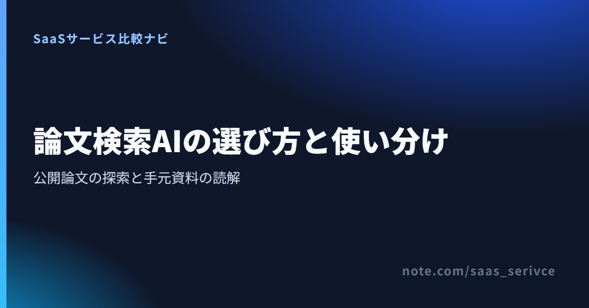

論文検索AIを選ぶ前に決めたいのは、公開されている論文を新しく探したいのか、すでに手元にあるPDFや資料を読み解きたいのかです。
公開論文の探索にはConsensus、集めた資料の整理・読解にはNouswiseが候補です。本記事の2製品は同じ種類の検索サービスではなく、それぞれ論文調査の前半と後半を担います。公開論文検索サービス同士で選びたい場合は、同カテゴリのElicitも比較対象に加えます。
Elicitは、公式サイトで料金を見るからBasicの条件を確認できます。
Basicでは論文検索と回答ソースの表示を無料で試せるため、Consensusと同じ問いを入れ、候補論文と根拠への戻り方を見比べられます。
研究上の問いから公開論文を探すならConsensus、すでに集めた資料をプロジェクト単位で扱うならNouswiseが候補です。 どちらか一方を万能な文献データベースとして使おうとせず、調査工程の違いで選びます。
Consensusは研究上の問いから公開論文の候補を探せます。FreeでもPapers検索を利用できるため、探索から始めたい人の入口になります。
同じ公開論文検索の候補にはElicitがあります。ElicitのBasicも論文検索と回答ソースの表示に対応するので、公開論文を探す目的ではConsensusとElicitを比べてから決められます。
Consensusの無料枠は、公式サイトで料金を見るから確認できます。
Papers検索とDeep ReviewなどのAI機能では上限の数え方が異なります。
Nouswiseは、自分で集めたソースをプロジェクトへまとめるサービスです。外部の公開論文を探す用途は担いません。選んだ資料を一つの作業単位にまとめたい場面で候補になります。
Nouswiseの利用上限は、公式サイトで料金を見るから確認できます。
ソース数と、音声要約やレポートなどの生成機能に設定された日次上限を分けて確認できます。
論文検索AIに自然な文章で問いを入力すると、候補や要点を整理する助けになります。ただし、検索対象と回答の作り方はサービスごとに異なり、従来の文献検索と原文確認は残ります。
従来の文献検索では、分野の用語や同義語を組み合わせます。ConsensusとElicitでは自然文の問いから探索を始められますが、必要な論文の網羅を保証するものではありません。
複数の研究をまとめた要約は、読む順番を決める手がかりになります。研究ごとに対象者、条件、評価項目が異なるため、採用する論文では原文に戻り、研究デザインと限界を確かめます。
原文を確認し、資料をまとめる段階では、外部検索とは別の機能が必要です。Nouswiseでは資料をプロジェクトに整理し、要約やレポート作成へ進めます。
論文検索AIの比較では、検索対象、原論文への戻りやすさ、日本語、無料枠、契約条件を同じ順序で見ます。 機能名の多さより、必要な調査工程を任せられるかどうかで候補を絞ります。
最初に、公開論文を外部から探したいのか、自分で追加した資料を読みたいのかを分けます。前者ではConsensusとElicitを比較し、後者ではNouswiseを候補にすると、検索サービスと資料整理サービスを混同せずに済みます。
特定分野や日本語論文を探す場合は、収録範囲も重要です。質問を日本語で入力できることと、日本語の論文が検索対象に含まれることは別なので、画面上の言語だけで判断できません。
AIの回答を見たら、引用先のタイトル、著者、掲載誌、発行年、DOIや原文リンクをたどれるか確認します。さらに、回答の内容が原文のどの記述に基づくのか、自分で照合できることが重要です。
製品紹介に「根拠付き」と書かれていても、引用先へのリンクだけなのか、該当箇所まで追えるのかでは検証の手間が変わります。契約前に、自分が必要とする深さまで戻れるかを無料枠で確かめてください。
日本語対応は一つの項目ではありません。管理画面の日本語表示、日本語での質問、回答文の日本語出力、日本語論文の収録、日本語での問い合わせを分けて確認します。
ConsensusはAI生成の要約・統合文について出力言語を変更できます。ただし、日本語を選べるか、日本語UIがあるか、日本語論文をどこまで収録しているか、日本語でサポートを受けられるかは、公式公開情報では確認できません。
Nouswiseは回答の出力言語に日本語を選べます。一方、日本語UI、日本語入力、日本語サポートの対応範囲は、公式公開情報では確認できません。UI・入力・出力・収録範囲・問い合わせ言語を分けて判断します。
Consensusは検索とレビュー機能、Nouswiseは保存できるソース数と生成機能で制限の単位が異なります。「無料で使えるか」だけでなく、自分が使う機能にどの上限がかかるかを見ます。
Consensusはカード払いに対応しますが、日本発行カードやJCBの可否、一般プランの請求書ダウンロードは公式公開情報で確認できません。解約はSettingsのSubscriptionから行えます。
Nouswiseは、一般サブスクリプションの支払い方法、日本発行カードやJCBの可否、請求書、解約条件を公式公開情報で確認できません。有料化前に、経費処理に必要な書類と停止方法を問い合わせるのが安全です。
ConsensusとNouswiseは完全な代替関係ではありません。公開論文を探すところから始めるか、集めた資料を読むところから始めるかで選びます。
ここで挙げる2製品は調査工程ごとの主候補です。公開論文検索サービスの中で選ぶ場合は、無料のBasicで論文検索と回答ソースを確認できるElicitもConsensusの比較相手に含めます。
ProではProメッセージが無制限で、Deep Reviewは15回/月です。DeepではDeep Reviewが200回/月へ増えるため、有料化は論文検索の回数よりも深いレビューをどれほど使うかで判断します。
Consensusのプランは、公式サイトで料金を見るから確認できます。
無料のPapers検索から始め、Deep Reviewなどの上限に達する使い方になった段階でProやDeepを比べてください。
ElicitのBasicは、公式サイトで料金を見るから確認できます。
公開論文検索を選ぶ段階では、同じ問いをConsensusとElicitへ入れ、見つかる候補と原文へ戻る導線を比べてください。
プロジェクト数は全プランで無制限です。ソース数はEssentialが300件、Proが無制限。音声要約、レポート、クイズ、マインドマップ、Deep Researchなどはプラン別の日次上限があるため、ソース数だけでは決められません。
Nouswiseのプランは、公式サイトで料金を見るから確認できます。
扱うソース数に加えて、毎日使う生成機能と上限を見比べ、Starterから有料へ移る必要があるかを判断してください。
どちらにも無料の入口がありますが、Consensusは検索・レビュー機能の回数、Nouswiseはソース数と生成機能の日次上限を見る必要があります。 日本から有料契約する場合は、公式公開情報にない決済・請求書・解約条件を事前に問い合わせます。
Consensus Freeは$0で、Papers検索は無制限です。Proメッセージには月間制限があり、Deep Reviewは3回/月、Study Snapshotは10回/月、API・MCPは30回/月となっています。検索を続けたい人と、高度なレビューを繰り返したい人では、同じFreeでも上限の影響が違います。
Nouswise Starterも$0です。プロジェクト数は無制限、ソースは100件、ファイル上限は100MBで、生成機能にはプラン別の日次上限があります。必要な生成機能がStarterに含まれるかも、あわせて確認します。
1ドル=158円換算の目安では、Consensus Proの月払い$20は約3,160円、Nouswise Essentialの$19.99/月は約3,158円です。円換算は為替で変動します。金額が近くても、増える機能と上限は異なるため、価格だけでは選べません。
ConsensusはFree $0、Pro $20/月または$144/年、Deep $65/月または$540/年です。年払いの月額相当はProが$12、Deepが$45で、Teamsは席数別、Enterpriseは要問い合わせとなります。
NouswiseはStarter $0、Essential $19.99/月、Pro $49.99/月、Enterpriseはカスタム価格です。年払いには17%割引があります。プロジェクト数は全プランで無制限で、ソース数はStarterが100件、Essentialが300件、Proが無制限です。
Consensusの最新プランは、公式サイトで料金を見るから確認できます。
月払いと年払いの差に加え、Deep Reviewを使う回数からProとDeepを選んでください。
Nouswiseの最新プランは、公式サイトで料金を見るから確認できます。
ソース数と生成機能の日次上限をあわせて確認すると、EssentialとProを比べやすくなります。
支払い方法については、Consensusはカードに対応しています。SettingsのSubscriptionから停止でき、現在の請求期間が終わるまでは有料機能を利用でき、その後Freeへ移行します。返金申請の対象期間は、月払いが購入後72時間、年払いが購入後5日以内です。
Consensusでは返金申請にinvoiceまたはreceipt番号を使います。一般プランの請求書ダウンロード、日本発行カード、JCBの対応は、公式公開情報では確認できません。API・MCPの請求履歴は別の仕組みであり、一般プランへは当てはめられません。
NouswiseのAPI利用分は、SettingsのAPI Accessから請求履歴と請求書を表示でき、月次で発行されます。ただし、これは一般サブスクリプションの契約条件ではありません。一般契約の支払い方法、請求書、解約条件、日本発行カードやJCBの可否は、公式公開情報では確認できません。
海外サービスの税区分や仕訳は契約主体によって扱いが変わるため、必要に応じて税理士に確認してください。
AIで問いと候補を広げ、Google Scholar、CiNii Research、J-STAGEで漏れを補い、原論文で確かめます。 海外のAIサービスだけで文献探索を完結させず、日本語文献を探す経路も残します。
研究上の問いから候補を探すときは、ConsensusとElicitで同じ問いを試し、見つかった専門語や同義語をGoogle Scholarなどの検索語へ渡します。AIが挙げた候補を、そのまま採用リストに入れることはしません。
日本語論文をConsensusがどこまで収録しているかは、公式公開情報で確認できません。そのため、国内の研究はCiNii ResearchやJ-STAGEでも検索します。海外文献にはGoogle Scholarや所属機関のデータベースを併用し、検索対象の偏りを補います。
原文を確認して採用した論文や利用許諾のある資料は、Nouswiseのプロジェクトへ調査テーマごとにまとめられます。出版社や所属機関の利用条件を確かめ、外部サービスへのアップロードが認められた資料だけを扱います。
AIの回答は候補を絞る入口にとどめ、引用先、対象者、研究デザイン、条件、限界を原文で確認します。 要約が流暢であるほど、それらしく読めます。それでも、確かめる工程は省けません。
引用された論文のタイトル、著者、掲載誌、発行年、DOIや原文リンクを照合します。AI生成文はそのまま引用せず、元の論文に同じ主張があるかを読みます。
Consensusの無料枠は、公式サイトで料金を見るから確認できます。
Papers検索では、候補探しから書誌情報と原文の照合までを一続きで試せます。
観察研究と介入研究では言えることが異なります。対象者、サンプル、比較対象、介入内容、主要評価項目を読み、AIの要約が条件を落としていないかを確かめます。
著者が挙げる限界、利益相反、追試の必要性を読み、異なる結果の研究も探します。
公開論文の探索はConsensus、集めた資料の整理・読解はNouswiseから試します。 無料枠で自分の調査工程に合うか確かめ、原文確認を残したまま、必要な場合だけ有料化しましょう。
FreeのPapers検索を入口に、問いから候補論文と関連語を広げます。同カテゴリのElicit Basicでも同じ問いを試し、候補と根拠への戻り方が自分の調査に合うほうを選びます。深いレビューを繰り返すようになったら、利用回数に合う有料プランを検討します。
Consensusを始める場合は、公式サイトで料金を見るから無料枠を確認できます。
公開論文の探索を優先し、回答後に原文へ戻る手順まで含めて試してください。
Starterで一つの調査テーマを作り、許諾された資料を整理します。ソース数や生成機能の日次上限が足りなくなった段階で、有料プランを検討します。
Nouswiseを始める場合は、公式サイトで料金を見るからStarterの条件を確認できます。
保存する資料数だけでなく、音声要約やレポートなど、実際に使う生成機能の日次上限も見てください。